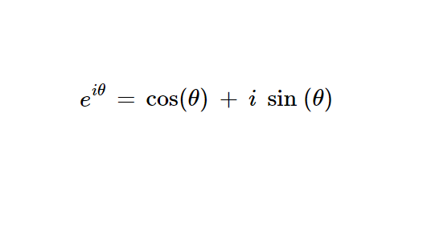

Początki liczb zespolonych
Pierwszym systematycznym badaczem liczb "dziwnych" był Rafael Bombelli. W książce L'Algebra zdefiniował reguły operacji na liczbach zespolonych. Przed jego regułami, pierwiastki liczb ujemnych uważane były za niewykonalne.
Wprowadzenie terminu "liczby urojone"
W 1637 roku René Descartes wprowadził termin "liczby urojone". Uważał je jednak za abstrakcję nie posiadającego rzeczywistego znaczenia
Definicja jednostki i
Leonhard Euler w XVIII wieku, zdefiniował liczbę i nadając jej bardziej formalny charakter. Kluczowy w tym był wzór Eulera który ukazał głębokie powiązania między liczbami zespolonymi a trygonometrią i analizą matematyczną.
